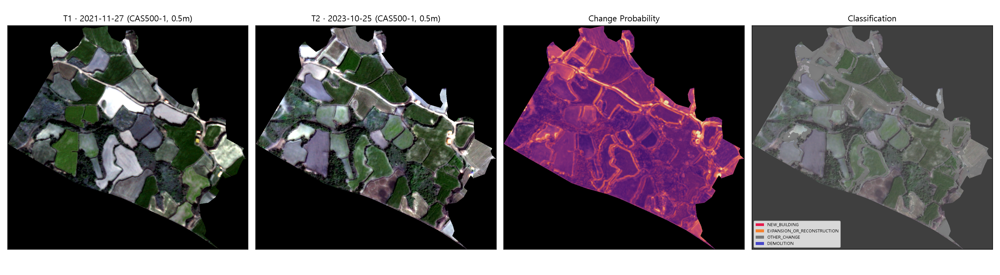
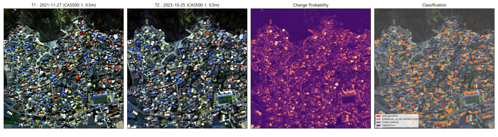

1핵심 요약
2해상도 비교 - 제주김녕 공공주택지구 (나대지)
이 지구(zonecode 50110LH2018001, 108,122㎡)는 아직 개발되지 않은 나대지였다. 그 덕분에 "동일 지구, 두 해상도"라는 순수한 비교가 가능했지만, 반대로 건물·불법건축물 로직을 검증할 대상 자체가 없었다.
Sentinel-2 (10m)

46×50픽셀 - 필지 경계조차 구분 안 됨
CAS500-1 (0.5m)

908×1000픽셀 - 필지·농로 뚜렷
| 지표 | Sentinel-2 | CAS500-1 |
|---|---|---|
| 변화 픽셀 비율 | 4.57% | 20.47% |
| 변화 폴리곤 수 | 2개 | 52개 |
| T1/T2 정합 변위 (신뢰도) | 1.81m | 0.00m (peak_ratio 18.7 - 매우 뚜렷) |
| 공간적 군집(Moran's I) | 표본 부족(n=2) | I=-0.023, p=0.93 (유의하지 않음 → 국지적 공사보다 계절적 경작 변화 가능성) |
결론: 해상도가 산출물의 "쓸 수 있는 형태" 자체를 바꾼다. 다만 이 지구가 나대지였던 탓에 52개 중 상당수는 신축 공사가 아니라 계절적 경작 변화(작물 교체)로 추정된다 - 아래 ⑤ 한계 참고.
3건물·불법건축물 검증 - 구좌읍 김녕리 마을 (실거주지)
나대지 지구의 한계를 보완하기 위해, 같은 CAS500-1 장면 2장(각각 약 14km×14km 커버) 안에서 VWorld 건물 레이어(lt_c_spbd) 8,442동을 그리드로 밀도 집계해 실제 건물이 가장 밀집한 지점(반경 300m 안에 약 1,400동)을 찾았다. 그 지점에 600m×600m 데모 AOI(0.36km², LH 공식 지구 아님)를 새로 만들어 동일 파이프라인을 재실행했다. AOI 안에 실제 건물 1,009동, 지적 필지 2,220필지, 건축물대장 1,838건, 인허가 정보 1,052건이 존재해 건물 매칭·분류·불법 스크리닝 로직을 실제로 검증할 수 있었다.
Sentinel-2 (10m)

61×61픽셀 - 색이 섞여 노이즈처럼 보임, 변화 1건만 검출
CAS500-1 (0.5m)

1,200×1,200픽셀 - 지붕 색·형태별 개별 건물 구분 가능
| 지표 | Sentinel-2 | CAS500-1 |
|---|---|---|
| 변화 픽셀 비율 | 3.87% | 11.17% |
| 변화 폴리곤 수 | 1개 | 368개 |
| 건물 연계 변화 후보 | 1개 (건축물대장 매칭) | 687개 (건물 401 + 미매칭 286 중 분류된 것) |
| 변화유형 분류 | EXPANSION_OR_RECONSTRUCTION 1 | NEW_BUILDING 39 · EXPANSION_OR_RECONSTRUCTION 359 · OTHER_CHANGE 289 |
| 우선순위 분포 | MEDIUM 1 | HIGH 111 · MEDIUM 389 · LOW 187 |
| 건축물대장 매칭률 | 93.7% (945/1,009동, 동일 건물층) | 93.7% (동일 건물층 재사용) |
| 지적 연계 (REQ08) | 미실행 | 후보-필지 1,365쌍 → 647개 필지 매칭, 485건 PNU 부여 |
| 현장조사 축약 (REQ05) | 1개 현장 | 687개 후보 → 528개 현장 (23% 축약), 총 이동거리 19.6km |
| 공간적 군집(Moran's I) | 표본 부족(n=1) | I=0.002, p=0.85 (유의하지 않음 - 변화가 특정 구역에 몰리지 않고 마을 전역에 고르게 분포) |
| Gi* 핫스팟 | 미계산 | 33개 지점이 통계적으로 유의한 변화 밀집지역(HOT_90 이상) |
| T1/T2 정합 변위 (신뢰도) | 7.81m | 8.78m (peak_ratio 1.69 - 나대지 사례(18.7)보다 훨씬 약함, 아래 한계 참고) |
4불법건축물 스크리닝 상세 (REQ02)
먼저 명확히 할 것: 이 스크리닝은 위법 여부를 판정하지 않는다. 위반건축물 판정은 건축법상 행정처분이며 지자체 조사·인정 절차가 필요하고, "이 건물이 위반이다"라는 정답 데이터 자체가 공개돼 있지 않다. 여기서 산출하는 것은 "보유한 행정정보(건축물대장)로 설명되지 않는 정도"의 등급일 뿐이다.
| 등급 | 건수 | 판정 기준 |
|---|---|---|
| A_STRONG | 0 | 독립적 증거 2개 이상 일치 (이번 실행에는 없음) |
| B_MODERATE | 71 | 단일 증거 - 대부분 "실제 footprint가 대장 등록 건축면적의 1.3배 이상"(무단증축 전형 패턴) |
| C_WEAK | 13 | 약한 신호 (변화 방향 불일치 등 참고 수준) |
| NONE | 603 | 행정정보로 설명됨 또는 추가 신호 없음 |
면적초과 신호(B등급 71건) 실측 통계
실제 footprint / 대장 건축면적 비율(area_excess_ratio): 평균 6.2배, 중앙값 1.73배, 최대 128.7배. 중앙값 기준으로는 "적당히 넘치는" 수준이 대부분이지만, 최댓값 128배짜리처럼 극단값도 섞여 있어 - 이런 극단값은 실제 무단증축이라기보다 건물 1개가 대장 여러 레코드로 쪼개졌거나 반대로 여러 동이 레코드 1개에 묶인 데이터 정합 오류일 가능성이 높다 (illegal_screen.py가 코드 주석으로 명시한 한계).
- 사례 1 (B등급) - 실제 footprint 150m²가 대장 건축면적 99m²의 1.52배. change_ratio=0.045(footprint 대비 변화 비율은 낮음) → 기존 건물의 일부 증축으로 추정, 명백한 신축은 아님.
- 사례 2 (B등급, 최고 우선순위) - 건축물대장 미매칭 + change_ratio=0.64·확신도=0.93의 뚜렷한 변화 → "등록되지 않은 신축"에 가장 부합하는 패턴. 다만 신도시/조성 초기 지역에서는 정상 시공 중인 건물도 대장이 아직 없을 수 있어 신축=불법으로 단정하면 안 된다.
신축(NEW_BUILDING, 39건) - 근거 강도별 구분
이 중 5건은 건축물대장 사용승인일이 T1~T2 구간(2021-11-27~2023-10-25) 안에 실제로 찍혀 있어 "신축 확정"이다 (예: 사용승인일 2023-05-23, 2023-03-31). 나머지 34건은 대장 미매칭 상태에서 change_ratio≥0.5(건물 면적의 절반 이상이 변한 것으로 보임)를 근거로 한 휴리스틱 추정이며, 확정이 아니라 현장 확인이 필요한 후보다.
5한계와 주의사항 - 반드시 함께 읽을 것
- 정답 라벨이 전혀 없다. 687건 중 실제로 몇 건이 진짜 신축/증축/불법인지 사람이 검증하지 않았다. 위 수치는 전부 "1차 스크리닝 결과"이지 "정확도"가 아니다.
- 마을 AOI의 T1/T2 정합 신뢰도가 나대지 사례보다 훨씬 약하다 (peak_ratio 1.69 vs 18.7). 촘촘하고 반복적인 건물·도로 패턴은 FFT 위상상관 알고리즘에서 여러 개의 비슷한 상관 피크를 만들어 진짜 이동량 추정을 어렵게 한다 - 실측 변위(8.78m)가 실제 지표 이동이 아니라 정합 알고리즘의 모호성 때문일 가능성을 배제할 수 없다. 더 강건한 정합 방법(특징점 기반 등)으로 재검증이 필요하다.
- 두 CAS500-1 촬영 시점 사이 지붕 색상 차이가 눈에 띈다 (T1/T2 이미지 비교 참고 - 많은 건물의 표시 색이 달라 보인다). 이것이 실제 지붕 교체 공사인지, 서로 다른 촬영일의 태양고도·대기보정 차이로 인한 색조 변화(radiometric shift)인지 구분하지 않았다 - 후자라면 EXPANSION_OR_RECONSTRUCTION 359건 중 상당수가 과다검출(false positive)일 수 있다.
- 면적초과 신호는 무단증축의 "전형적 패턴"이지 증거가 아니다. VWorld footprint는 처마·발코니를 포함할 수 있고, 대장 레코드와 건물이 1:1로 대응하지 않는 경우가 섞여 있다(최대 128배 같은 극단값이 그 방증).
- 이 AOI는 LH 공식 사업지구가 아니다. zonecode도, 보상기준일도, 공식 고시도 없는 순수 검증용 데모다 - 보고서의 "확정" 표현(사용승인일 근거 신축 5건 등)은 어디까지나 공공데이터포털 건축물대장 값 자체를 신뢰한다는 전제 위에 있다.
- CAS500-1 밴드 순서(Blue/Green/Red/NIR)는 확정되지 않은 가정이다. 래스터 자체에 밴드명 메타데이터가 없어 국내 위성의 통상적 관례로 가정했을 뿐, NGII 공식 제품 스펙시트로 검증되지 않았다.
6데이터 출처 · 이번 작업에서 발견·수정한 실제 버그
AOI: 제주김녕 - VWorld WFS lt_c_lhzone zonecode 50110LH2018001 (실측 108,122㎡). 김녕리 마을 - VWorld 건물밀도(lt_c_spbd) 그리드 집계로 자체 산정한 600m×600m 데모 AOI(중심 126.7485E, 33.5565N).
CAS500-1: D:\NGII_CAS500_1_IMAGE.gdb 모자이크 데이터셋 - 26개 장면 중 두 지역 모두를 커버하는 동일한 2개 raster item(2021-11-27, 2023-10-25)을 재사용했다.
건축물대장/인허가: 공공데이터포털 ArchPmsHubService, 법정동코드 5011025634(구좌읍 김녕리).
이번 작업 중 실제로 노출·수정한 버그 5건: (1) build_buildings.py/build_cadastre.py의 분석좌표계 하드코딩 - 0건 건물 AOI에서 CRS 유실, (2)(3) arcpy가 geopandas發 0건 GPKG(geometry type 미확정)를 CopyFeatures/SelectLayerByLocation에서 거부하는 문제 2건, (4) arcpy.env.extent가 SpatialAutocorrelation과 충돌, (5) arcpy_pipeline/env.py의 분석좌표계(ANALYSIS_EPSG) 하드코딩. 상세는 src/data/build_buildings.py, src/data/build_cadastre.py, src/arcpy_pipeline/buildings.py, src/arcpy_pipeline/spatial_stats.py, src/arcpy_pipeline/env.py 참고.
실행 중 ArcGIS Enterprise 포털(portal.esrikr.com)에 두 실행 모두 웹맵+레이어 5종을 자동 발행했으나, 검증 목적의 임시 실행이라 전부 삭제했다(2026-09-11).